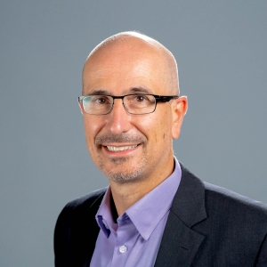
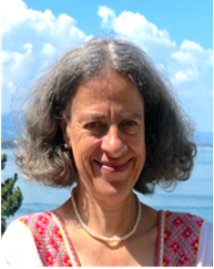
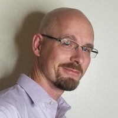
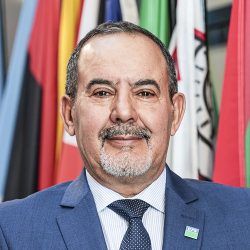
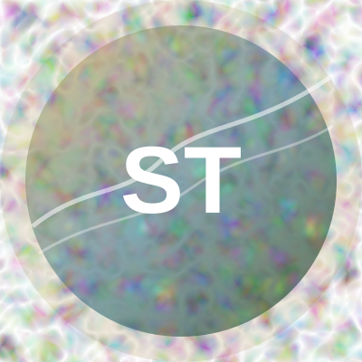

Paolo D'Odorico
UC Berkeley · UNCCD SPI
Connectivity, feedbacks, thresholds, and tipping points in dryland systems.
Profile ↗UNCCD COP17 · Ulaanbaatar 2026
A panel discussion connecting dryland science, restoration practice, local experience, and policy.
The session in brief
Dryland degradation rarely results from a single cause. Wind erosion, water runoff, vegetation loss, and overgrazing are connected processes that can reinforce one another across landscapes.
This session presents a process-based framework focused on managing the pathways through which wind, water, and grazing animals move material and resources. It moves from connectivity science through wind, water, livestock, monitoring, food systems, local action, governance, and policy.
Panelists

UC Berkeley · UNCCD SPI
Connectivity, feedbacks, thresholds, and tipping points in dryland systems.
Profile ↗
IPICYT · UNCCD SPI
Livestock as connectivity agents: grazing, movement, and governance.
Profile ↗
International Livestock Research Institute
Supporting and monitoring pastoralist rangeland management for dryland restoration in Africa.
Profile ↗
UM6P · DesertNet International
From connectivity science to dryland food systems and policy action.
Profile ↗Wildlife Science and Conservation Center of Mongolia
From landscape connectivity to local action: a Mongolian perspective.
Profile ↗University of Wisconsin–Madison · Co-chair
Wind connectivity, aeolian transport, and interventions for dryland restoration.
Profile ↗
Jornada Experimental Range · New Mexico State University · Chair
Water connectivity, runoff, resource redistribution, and earthworks for restoration.
Profile ↗Join the conversation
Room MET-03 (CSO), Ulaanbaatar · UNCCD COP17 Side Event 299